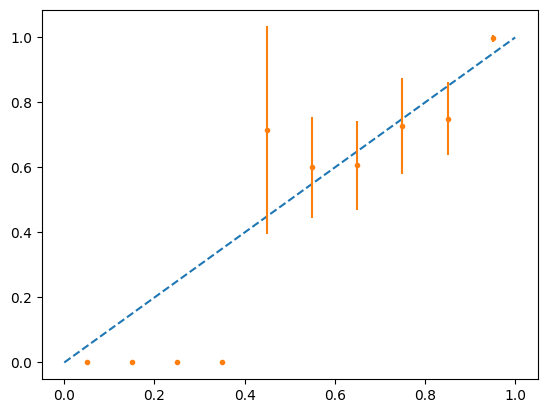
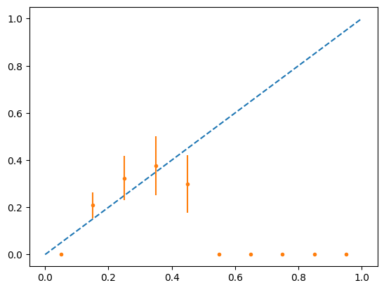

import torch
import torch.nn as nn
import torch.nn.functional as F
import torch.optim as optim
from torchvision import datasets, transforms
from torch.optim.lr_scheduler import StepLR
import numpy as np
import matplotlib.pyplot as plt
import easydictDefine NN
class Net(nn.Module):
def __init__(self):
super(Net, self).__init__()
self.conv1 = nn.Conv2d(1, 32, 3, 1)
self.conv2 = nn.Conv2d(32, 64, 3, 1)
self.dropout1 = nn.Dropout(0.25)
self.dropout2 = nn.Dropout(0.5)
self.fc1 = nn.Linear(9216, 128)
self.fc2 = nn.Linear(128, 10)
def forward(self, x):
x = self.conv1(x)
x = F.relu(x)
x = self.conv2(x)
x = F.relu(x)
x = F.max_pool2d(x, 2)
x = self.dropout1(x)
x = torch.flatten(x, 1)
x = self.fc1(x)
x = F.relu(x)
x = self.dropout2(x)
x = self.fc2(x)
output = F.log_softmax(x, dim=1)
return output1 Train NN
def train(args, model, device, train_loader, optimizer, epoch):
model.train()
for batch_idx, (data, target) in enumerate(train_loader):
data, target = data.to(device), target.to(device)
optimizer.zero_grad()
output = model(data)
loss = F.nll_loss(output, target)
loss.backward()
optimizer.step()
if batch_idx % args.log_interval == 0:
print('Train Epoch: {} [{}/{} ({:.0f}%)]\tLoss: {:.6f}'.format(
epoch, batch_idx * len(data), len(train_loader.dataset),
100. * batch_idx / len(train_loader), loss.item()))
if args.dry_run:
break
def test(model, device, test_loader):
model.eval()
test_loss = 0
correct = 0
with torch.no_grad():
for data, target in test_loader:
data, target = data.to(device), target.to(device)
output = model(data)
test_loss += F.nll_loss(output, target, reduction='sum').item() # sum up batch loss
pred = output.argmax(dim=1, keepdim=True) # get the index of the max log-probability
correct += pred.eq(target.view_as(pred)).sum().item()
test_loss /= len(test_loader.dataset)
print('\nTest set: Average loss: {:.4f}, Accuracy: {}/{} ({:.0f}%)\n'.format(
test_loss, correct, len(test_loader.dataset),
100. * correct / len(test_loader.dataset)))# Training settings
args = easydict.EasyDict({
"batch_size": 64,
"test_batch_size": 10000,
"train_steps": 1000,
"no_cuda": False,
"no_mps": True,
"seed": 1,
"lr": 1.0,
"gamma": 0.7,
"epochs": 10,
"dry_run": False,
"log_interval": 10,
"save_model": False
})
use_cuda = not args.no_cuda and torch.cuda.is_available()
use_mps = not args.no_mps and torch.backends.mps.is_available()
torch.manual_seed(args.seed)
if use_cuda:
device = torch.device("cuda")
elif use_mps:
device = torch.device("mps")
else:
device = torch.device("cpu")
train_kwargs = {'batch_size': args.batch_size}
test_kwargs = {'batch_size': args.test_batch_size}
if use_cuda:
cuda_kwargs = {'num_workers': 1,
'pin_memory': True,
'shuffle': True}
train_kwargs.update(cuda_kwargs)
test_kwargs.update(cuda_kwargs)
transform=transforms.Compose([
transforms.ToTensor(),
transforms.Normalize((0.1307,), (0.3081,))
])
dataset1 = datasets.MNIST(root='./', train=True, download=True, transform=transform)
dataset2 = datasets.MNIST(root='./', train=False, transform=transform)
train_loader = torch.utils.data.DataLoader(dataset1,**train_kwargs)
test_loader = torch.utils.data.DataLoader(dataset2, **test_kwargs)
model = Net().to(device)
optimizer = optim.Adadelta(model.parameters(), lr=args.lr)
scheduler = StepLR(optimizer, step_size=1, gamma=args.gamma)
for epoch in range(1, args.epochs + 1):
train(args, model, device, train_loader, optimizer, epoch)
test(model, device, test_loader)
scheduler.step()
if args.save_model:
torch.save(model.state_dict(), "mnist_cnn.pt")Train Epoch: 1 [0/60000 (0%)] Loss: 2.294195
Train Epoch: 1 [640/60000 (1%)] Loss: 1.180001
Train Epoch: 1 [1280/60000 (2%)] Loss: 1.002264
Train Epoch: 1 [1920/60000 (3%)] Loss: 0.675544
Train Epoch: 1 [2560/60000 (4%)] Loss: 0.480116
Train Epoch: 1 [3200/60000 (5%)] Loss: 0.414904
Train Epoch: 1 [3840/60000 (6%)] Loss: 0.184179
Train Epoch: 1 [4480/60000 (7%)] Loss: 0.484201
Train Epoch: 1 [5120/60000 (9%)] Loss: 0.202506
Train Epoch: 1 [5760/60000 (10%)] Loss: 0.082319
Train Epoch: 1 [6400/60000 (11%)] Loss: 0.346766
Train Epoch: 1 [7040/60000 (12%)] Loss: 0.296102
Train Epoch: 1 [7680/60000 (13%)] Loss: 0.350702
Train Epoch: 1 [8320/60000 (14%)] Loss: 0.272826
Train Epoch: 1 [8960/60000 (15%)] Loss: 0.364187
Train Epoch: 1 [9600/60000 (16%)] Loss: 0.141975
Train Epoch: 1 [10240/60000 (17%)] Loss: 0.299273
Train Epoch: 1 [10880/60000 (18%)] Loss: 0.228209
Train Epoch: 1 [11520/60000 (19%)] Loss: 0.183938
Train Epoch: 1 [12160/60000 (20%)] Loss: 0.106442
Train Epoch: 1 [12800/60000 (21%)] Loss: 0.185025
Train Epoch: 1 [13440/60000 (22%)] Loss: 0.197479
Train Epoch: 1 [14080/60000 (23%)] Loss: 0.410205
Train Epoch: 1 [14720/60000 (25%)] Loss: 0.210648
Train Epoch: 1 [15360/60000 (26%)] Loss: 0.253689
Train Epoch: 1 [16000/60000 (27%)] Loss: 0.392386
Train Epoch: 1 [16640/60000 (28%)] Loss: 0.086032
Train Epoch: 1 [17280/60000 (29%)] Loss: 0.147895
Train Epoch: 1 [17920/60000 (30%)] Loss: 0.083987
Train Epoch: 1 [18560/60000 (31%)] Loss: 0.187798
Train Epoch: 1 [19200/60000 (32%)] Loss: 0.212437
Train Epoch: 1 [19840/60000 (33%)] Loss: 0.091757
Train Epoch: 1 [20480/60000 (34%)] Loss: 0.166637
Train Epoch: 1 [21120/60000 (35%)] Loss: 0.229734
Train Epoch: 1 [21760/60000 (36%)] Loss: 0.361565
Train Epoch: 1 [22400/60000 (37%)] Loss: 0.182521
Train Epoch: 1 [23040/60000 (38%)] Loss: 0.185908
Train Epoch: 1 [23680/60000 (39%)] Loss: 0.253888
Train Epoch: 1 [24320/60000 (41%)] Loss: 0.142743
Train Epoch: 1 [24960/60000 (42%)] Loss: 0.095850
Train Epoch: 1 [25600/60000 (43%)] Loss: 0.162040
Train Epoch: 1 [26240/60000 (44%)] Loss: 0.115878
Train Epoch: 1 [26880/60000 (45%)] Loss: 0.198962
Train Epoch: 1 [27520/60000 (46%)] Loss: 0.102030
Train Epoch: 1 [28160/60000 (47%)] Loss: 0.062056
Train Epoch: 1 [28800/60000 (48%)] Loss: 0.049717
Train Epoch: 1 [29440/60000 (49%)] Loss: 0.104123
Train Epoch: 1 [30080/60000 (50%)] Loss: 0.156857
Train Epoch: 1 [30720/60000 (51%)] Loss: 0.160357
Train Epoch: 1 [31360/60000 (52%)] Loss: 0.112281
Train Epoch: 1 [32000/60000 (53%)] Loss: 0.274216
Train Epoch: 1 [32640/60000 (54%)] Loss: 0.087785
Train Epoch: 1 [33280/60000 (55%)] Loss: 0.127091
Train Epoch: 1 [33920/60000 (57%)] Loss: 0.098187
Train Epoch: 1 [34560/60000 (58%)] Loss: 0.070692
Train Epoch: 1 [35200/60000 (59%)] Loss: 0.042735
Train Epoch: 1 [35840/60000 (60%)] Loss: 0.026948
Train Epoch: 1 [36480/60000 (61%)] Loss: 0.205582
Train Epoch: 1 [37120/60000 (62%)] Loss: 0.184283
Train Epoch: 1 [37760/60000 (63%)] Loss: 0.021948
Train Epoch: 1 [38400/60000 (64%)] Loss: 0.143789
Train Epoch: 1 [39040/60000 (65%)] Loss: 0.077394
Train Epoch: 1 [39680/60000 (66%)] Loss: 0.465492
Train Epoch: 1 [40320/60000 (67%)] Loss: 0.164643
Train Epoch: 1 [40960/60000 (68%)] Loss: 0.208316
Train Epoch: 1 [41600/60000 (69%)] Loss: 0.198486
Train Epoch: 1 [42240/60000 (70%)] Loss: 0.116890
Train Epoch: 1 [42880/60000 (71%)] Loss: 0.043362
Train Epoch: 1 [43520/60000 (72%)] Loss: 0.052928
Train Epoch: 1 [44160/60000 (74%)] Loss: 0.068250
Train Epoch: 1 [44800/60000 (75%)] Loss: 0.112628
Train Epoch: 1 [45440/60000 (76%)] Loss: 0.252677
Train Epoch: 1 [46080/60000 (77%)] Loss: 0.037462
Train Epoch: 1 [46720/60000 (78%)] Loss: 0.044782
Train Epoch: 1 [47360/60000 (79%)] Loss: 0.077677
Train Epoch: 1 [48000/60000 (80%)] Loss: 0.131943
Train Epoch: 1 [48640/60000 (81%)] Loss: 0.250711
Train Epoch: 1 [49280/60000 (82%)] Loss: 0.060754
Train Epoch: 1 [49920/60000 (83%)] Loss: 0.101775
Train Epoch: 1 [50560/60000 (84%)] Loss: 0.088176
Train Epoch: 1 [51200/60000 (85%)] Loss: 0.251193
Train Epoch: 1 [51840/60000 (86%)] Loss: 0.130405
Train Epoch: 1 [52480/60000 (87%)] Loss: 0.033315
Train Epoch: 1 [53120/60000 (88%)] Loss: 0.016534
Train Epoch: 1 [53760/60000 (90%)] Loss: 0.095035
Train Epoch: 1 [54400/60000 (91%)] Loss: 0.112968
Train Epoch: 1 [55040/60000 (92%)] Loss: 0.090509
Train Epoch: 1 [55680/60000 (93%)] Loss: 0.058208
Train Epoch: 1 [56320/60000 (94%)] Loss: 0.369659
Train Epoch: 1 [56960/60000 (95%)] Loss: 0.110938
Train Epoch: 1 [57600/60000 (96%)] Loss: 0.034835
Train Epoch: 1 [58240/60000 (97%)] Loss: 0.101031
Train Epoch: 1 [58880/60000 (98%)] Loss: 0.132866
Train Epoch: 1 [59520/60000 (99%)] Loss: 0.036369
Test set: Average loss: 0.0494, Accuracy: 9832/10000 (98%)
Train Epoch: 2 [0/60000 (0%)] Loss: 0.038950
Train Epoch: 2 [640/60000 (1%)] Loss: 0.018632
Train Epoch: 2 [1280/60000 (2%)] Loss: 0.042847
Train Epoch: 2 [1920/60000 (3%)] Loss: 0.127584
Train Epoch: 2 [2560/60000 (4%)] Loss: 0.034269
Train Epoch: 2 [3200/60000 (5%)] Loss: 0.095904
Train Epoch: 2 [3840/60000 (6%)] Loss: 0.130299
Train Epoch: 2 [4480/60000 (7%)] Loss: 0.125100
Train Epoch: 2 [5120/60000 (9%)] Loss: 0.087419
Train Epoch: 2 [5760/60000 (10%)] Loss: 0.044702
Train Epoch: 2 [6400/60000 (11%)] Loss: 0.027029
Train Epoch: 2 [7040/60000 (12%)] Loss: 0.025569
Train Epoch: 2 [7680/60000 (13%)] Loss: 0.043176
Train Epoch: 2 [8320/60000 (14%)] Loss: 0.137136
Train Epoch: 2 [8960/60000 (15%)] Loss: 0.034887
Train Epoch: 2 [9600/60000 (16%)] Loss: 0.079766
Train Epoch: 2 [10240/60000 (17%)] Loss: 0.076193
Train Epoch: 2 [10880/60000 (18%)] Loss: 0.049517
Train Epoch: 2 [11520/60000 (19%)] Loss: 0.117182
Train Epoch: 2 [12160/60000 (20%)] Loss: 0.060225
Train Epoch: 2 [12800/60000 (21%)] Loss: 0.020065
Train Epoch: 2 [13440/60000 (22%)] Loss: 0.036894
Train Epoch: 2 [14080/60000 (23%)] Loss: 0.165739
Train Epoch: 2 [14720/60000 (25%)] Loss: 0.006837
Train Epoch: 2 [15360/60000 (26%)] Loss: 0.159040
Train Epoch: 2 [16000/60000 (27%)] Loss: 0.017017
Train Epoch: 2 [16640/60000 (28%)] Loss: 0.197961
Train Epoch: 2 [17280/60000 (29%)] Loss: 0.075722
Train Epoch: 2 [17920/60000 (30%)] Loss: 0.050039
Train Epoch: 2 [18560/60000 (31%)] Loss: 0.085986
Train Epoch: 2 [19200/60000 (32%)] Loss: 0.007128
Train Epoch: 2 [19840/60000 (33%)] Loss: 0.044557
Train Epoch: 2 [20480/60000 (34%)] Loss: 0.097439
Train Epoch: 2 [21120/60000 (35%)] Loss: 0.019451
Train Epoch: 2 [21760/60000 (36%)] Loss: 0.012616
Train Epoch: 2 [22400/60000 (37%)] Loss: 0.087723
Train Epoch: 2 [23040/60000 (38%)] Loss: 0.012590
Train Epoch: 2 [23680/60000 (39%)] Loss: 0.171256
Train Epoch: 2 [24320/60000 (41%)] Loss: 0.009623
Train Epoch: 2 [24960/60000 (42%)] Loss: 0.026829
Train Epoch: 2 [25600/60000 (43%)] Loss: 0.083084
Train Epoch: 2 [26240/60000 (44%)] Loss: 0.050153
Train Epoch: 2 [26880/60000 (45%)] Loss: 0.054305
Train Epoch: 2 [27520/60000 (46%)] Loss: 0.044301
Train Epoch: 2 [28160/60000 (47%)] Loss: 0.027444
Train Epoch: 2 [28800/60000 (48%)] Loss: 0.256090
Train Epoch: 2 [29440/60000 (49%)] Loss: 0.178096
Train Epoch: 2 [30080/60000 (50%)] Loss: 0.211050
Train Epoch: 2 [30720/60000 (51%)] Loss: 0.101594
Train Epoch: 2 [31360/60000 (52%)] Loss: 0.030647
Train Epoch: 2 [32000/60000 (53%)] Loss: 0.055230
Train Epoch: 2 [32640/60000 (54%)] Loss: 0.100372
Train Epoch: 2 [33280/60000 (55%)] Loss: 0.060336
Train Epoch: 2 [33920/60000 (57%)] Loss: 0.076463
Train Epoch: 2 [34560/60000 (58%)] Loss: 0.108200
Train Epoch: 2 [35200/60000 (59%)] Loss: 0.083186
Train Epoch: 2 [35840/60000 (60%)] Loss: 0.012593
Train Epoch: 2 [36480/60000 (61%)] Loss: 0.101895
Train Epoch: 2 [37120/60000 (62%)] Loss: 0.182661
Train Epoch: 2 [37760/60000 (63%)] Loss: 0.029675
Train Epoch: 2 [38400/60000 (64%)] Loss: 0.021516
Train Epoch: 2 [39040/60000 (65%)] Loss: 0.069059
Train Epoch: 2 [39680/60000 (66%)] Loss: 0.013381
Train Epoch: 2 [40320/60000 (67%)] Loss: 0.026772
Train Epoch: 2 [40960/60000 (68%)] Loss: 0.015306
Train Epoch: 2 [41600/60000 (69%)] Loss: 0.048885
Train Epoch: 2 [42240/60000 (70%)] Loss: 0.019436
Train Epoch: 2 [42880/60000 (71%)] Loss: 0.026798
Train Epoch: 2 [43520/60000 (72%)] Loss: 0.023371
Train Epoch: 2 [44160/60000 (74%)] Loss: 0.011425
Train Epoch: 2 [44800/60000 (75%)] Loss: 0.105440
Train Epoch: 2 [45440/60000 (76%)] Loss: 0.034829
Train Epoch: 2 [46080/60000 (77%)] Loss: 0.015255
Train Epoch: 2 [46720/60000 (78%)] Loss: 0.100060
Train Epoch: 2 [47360/60000 (79%)] Loss: 0.077043
Train Epoch: 2 [48000/60000 (80%)] Loss: 0.112252
Train Epoch: 2 [48640/60000 (81%)] Loss: 0.198134
Train Epoch: 2 [49280/60000 (82%)] Loss: 0.103737
Train Epoch: 2 [49920/60000 (83%)] Loss: 0.034634
Train Epoch: 2 [50560/60000 (84%)] Loss: 0.016776
Train Epoch: 2 [51200/60000 (85%)] Loss: 0.097054
Train Epoch: 2 [51840/60000 (86%)] Loss: 0.079313
Train Epoch: 2 [52480/60000 (87%)] Loss: 0.007791
Train Epoch: 2 [53120/60000 (88%)] Loss: 0.319476
Train Epoch: 2 [53760/60000 (90%)] Loss: 0.127309
Train Epoch: 2 [54400/60000 (91%)] Loss: 0.033371
Train Epoch: 2 [55040/60000 (92%)] Loss: 0.021740
Train Epoch: 2 [55680/60000 (93%)] Loss: 0.159024
Train Epoch: 2 [56320/60000 (94%)] Loss: 0.024979
Train Epoch: 2 [56960/60000 (95%)] Loss: 0.158085
Train Epoch: 2 [57600/60000 (96%)] Loss: 0.032614
Train Epoch: 2 [58240/60000 (97%)] Loss: 0.104985
Train Epoch: 2 [58880/60000 (98%)] Loss: 0.178280
Train Epoch: 2 [59520/60000 (99%)] Loss: 0.056658
Test set: Average loss: 0.0332, Accuracy: 9890/10000 (99%)
Train Epoch: 3 [0/60000 (0%)] Loss: 0.057755
Train Epoch: 3 [640/60000 (1%)] Loss: 0.083562
Train Epoch: 3 [1280/60000 (2%)] Loss: 0.074043
Train Epoch: 3 [1920/60000 (3%)] Loss: 0.096043
Train Epoch: 3 [2560/60000 (4%)] Loss: 0.011423
Train Epoch: 3 [3200/60000 (5%)] Loss: 0.095474
Train Epoch: 3 [3840/60000 (6%)] Loss: 0.019790
Train Epoch: 3 [4480/60000 (7%)] Loss: 0.013226
Train Epoch: 3 [5120/60000 (9%)] Loss: 0.064755
Train Epoch: 3 [5760/60000 (10%)] Loss: 0.026104
Train Epoch: 3 [6400/60000 (11%)] Loss: 0.015292
Train Epoch: 3 [7040/60000 (12%)] Loss: 0.061778
Train Epoch: 3 [7680/60000 (13%)] Loss: 0.052393
Train Epoch: 3 [8320/60000 (14%)] Loss: 0.087996
Train Epoch: 3 [8960/60000 (15%)] Loss: 0.019291
Train Epoch: 3 [9600/60000 (16%)] Loss: 0.114352
Train Epoch: 3 [10240/60000 (17%)] Loss: 0.008325
Train Epoch: 3 [10880/60000 (18%)] Loss: 0.110555
Train Epoch: 3 [11520/60000 (19%)] Loss: 0.113429
Train Epoch: 3 [12160/60000 (20%)] Loss: 0.048753
Train Epoch: 3 [12800/60000 (21%)] Loss: 0.011135
Train Epoch: 3 [13440/60000 (22%)] Loss: 0.017783
Train Epoch: 3 [14080/60000 (23%)] Loss: 0.106435
Train Epoch: 3 [14720/60000 (25%)] Loss: 0.009064
Train Epoch: 3 [15360/60000 (26%)] Loss: 0.065392
Train Epoch: 3 [16000/60000 (27%)] Loss: 0.339997
Train Epoch: 3 [16640/60000 (28%)] Loss: 0.040139
Train Epoch: 3 [17280/60000 (29%)] Loss: 0.052082
Train Epoch: 3 [17920/60000 (30%)] Loss: 0.067433
Train Epoch: 3 [18560/60000 (31%)] Loss: 0.074019
Train Epoch: 3 [19200/60000 (32%)] Loss: 0.061284
Train Epoch: 3 [19840/60000 (33%)] Loss: 0.140725
Train Epoch: 3 [20480/60000 (34%)] Loss: 0.005757
Train Epoch: 3 [21120/60000 (35%)] Loss: 0.025388
Train Epoch: 3 [21760/60000 (36%)] Loss: 0.058890
Train Epoch: 3 [22400/60000 (37%)] Loss: 0.126411
Train Epoch: 3 [23040/60000 (38%)] Loss: 0.150550
Train Epoch: 3 [23680/60000 (39%)] Loss: 0.124863
Train Epoch: 3 [24320/60000 (41%)] Loss: 0.007959
Train Epoch: 3 [24960/60000 (42%)] Loss: 0.093337
Train Epoch: 3 [25600/60000 (43%)] Loss: 0.028938
Train Epoch: 3 [26240/60000 (44%)] Loss: 0.010588
Train Epoch: 3 [26880/60000 (45%)] Loss: 0.029781
Train Epoch: 3 [27520/60000 (46%)] Loss: 0.086759
Train Epoch: 3 [28160/60000 (47%)] Loss: 0.037783
Train Epoch: 3 [28800/60000 (48%)] Loss: 0.234674
Train Epoch: 3 [29440/60000 (49%)] Loss: 0.025838
Train Epoch: 3 [30080/60000 (50%)] Loss: 0.184949
Train Epoch: 3 [30720/60000 (51%)] Loss: 0.059438
Train Epoch: 3 [31360/60000 (52%)] Loss: 0.041714
Train Epoch: 3 [32000/60000 (53%)] Loss: 0.156539
Train Epoch: 3 [32640/60000 (54%)] Loss: 0.007452
Train Epoch: 3 [33280/60000 (55%)] Loss: 0.009122
Train Epoch: 3 [33920/60000 (57%)] Loss: 0.003207
Train Epoch: 3 [34560/60000 (58%)] Loss: 0.028001
Train Epoch: 3 [35200/60000 (59%)] Loss: 0.018550
Train Epoch: 3 [35840/60000 (60%)] Loss: 0.130192
Train Epoch: 3 [36480/60000 (61%)] Loss: 0.090595
Train Epoch: 3 [37120/60000 (62%)] Loss: 0.117636
Train Epoch: 3 [37760/60000 (63%)] Loss: 0.129806
Train Epoch: 3 [38400/60000 (64%)] Loss: 0.011939
Train Epoch: 3 [39040/60000 (65%)] Loss: 0.003473
Train Epoch: 3 [39680/60000 (66%)] Loss: 0.009400
Train Epoch: 3 [40320/60000 (67%)] Loss: 0.062588
Train Epoch: 3 [40960/60000 (68%)] Loss: 0.085568
Train Epoch: 3 [41600/60000 (69%)] Loss: 0.068000
Train Epoch: 3 [42240/60000 (70%)] Loss: 0.173114
Train Epoch: 3 [42880/60000 (71%)] Loss: 0.051839
Train Epoch: 3 [43520/60000 (72%)] Loss: 0.010489
Train Epoch: 3 [44160/60000 (74%)] Loss: 0.032352
Train Epoch: 3 [44800/60000 (75%)] Loss: 0.008363
Train Epoch: 3 [45440/60000 (76%)] Loss: 0.096406
Train Epoch: 3 [46080/60000 (77%)] Loss: 0.018989
Train Epoch: 3 [46720/60000 (78%)] Loss: 0.044288
Train Epoch: 3 [47360/60000 (79%)] Loss: 0.053591
Train Epoch: 3 [48000/60000 (80%)] Loss: 0.048788
Train Epoch: 3 [48640/60000 (81%)] Loss: 0.053955
Train Epoch: 3 [49280/60000 (82%)] Loss: 0.038004
Train Epoch: 3 [49920/60000 (83%)] Loss: 0.059528
Train Epoch: 3 [50560/60000 (84%)] Loss: 0.058245
Train Epoch: 3 [51200/60000 (85%)] Loss: 0.128607
Train Epoch: 3 [51840/60000 (86%)] Loss: 0.008780
Train Epoch: 3 [52480/60000 (87%)] Loss: 0.019884
Train Epoch: 3 [53120/60000 (88%)] Loss: 0.123999
Train Epoch: 3 [53760/60000 (90%)] Loss: 0.160049
Train Epoch: 3 [54400/60000 (91%)] Loss: 0.089618
Train Epoch: 3 [55040/60000 (92%)] Loss: 0.093620
Train Epoch: 3 [55680/60000 (93%)] Loss: 0.004558
Train Epoch: 3 [56320/60000 (94%)] Loss: 0.257298
Train Epoch: 3 [56960/60000 (95%)] Loss: 0.001707
Train Epoch: 3 [57600/60000 (96%)] Loss: 0.009086
Train Epoch: 3 [58240/60000 (97%)] Loss: 0.098800
Train Epoch: 3 [58880/60000 (98%)] Loss: 0.016971
Train Epoch: 3 [59520/60000 (99%)] Loss: 0.041612
Test set: Average loss: 0.0354, Accuracy: 9893/10000 (99%)
Train Epoch: 4 [0/60000 (0%)] Loss: 0.027068
Train Epoch: 4 [640/60000 (1%)] Loss: 0.025651
Train Epoch: 4 [1280/60000 (2%)] Loss: 0.068432
Train Epoch: 4 [1920/60000 (3%)] Loss: 0.015054
Train Epoch: 4 [2560/60000 (4%)] Loss: 0.024738
Train Epoch: 4 [3200/60000 (5%)] Loss: 0.131066
Train Epoch: 4 [3840/60000 (6%)] Loss: 0.004083
Train Epoch: 4 [4480/60000 (7%)] Loss: 0.004587
Train Epoch: 4 [5120/60000 (9%)] Loss: 0.011877
Train Epoch: 4 [5760/60000 (10%)] Loss: 0.022312
Train Epoch: 4 [6400/60000 (11%)] Loss: 0.012356
Train Epoch: 4 [7040/60000 (12%)] Loss: 0.064791
Train Epoch: 4 [7680/60000 (13%)] Loss: 0.019379
Train Epoch: 4 [8320/60000 (14%)] Loss: 0.004289
Train Epoch: 4 [8960/60000 (15%)] Loss: 0.075152
Train Epoch: 4 [9600/60000 (16%)] Loss: 0.007495
Train Epoch: 4 [10240/60000 (17%)] Loss: 0.005745
Train Epoch: 4 [10880/60000 (18%)] Loss: 0.018124
Train Epoch: 4 [11520/60000 (19%)] Loss: 0.046521
Train Epoch: 4 [12160/60000 (20%)] Loss: 0.069862
Train Epoch: 4 [12800/60000 (21%)] Loss: 0.128811
Train Epoch: 4 [13440/60000 (22%)] Loss: 0.176066
Train Epoch: 4 [14080/60000 (23%)] Loss: 0.123174
Train Epoch: 4 [14720/60000 (25%)] Loss: 0.015383
Train Epoch: 4 [15360/60000 (26%)] Loss: 0.004091
Train Epoch: 4 [16000/60000 (27%)] Loss: 0.028453
Train Epoch: 4 [16640/60000 (28%)] Loss: 0.000718
Train Epoch: 4 [17280/60000 (29%)] Loss: 0.005798
Train Epoch: 4 [17920/60000 (30%)] Loss: 0.072615
Train Epoch: 4 [18560/60000 (31%)] Loss: 0.033239
Train Epoch: 4 [19200/60000 (32%)] Loss: 0.019612
Train Epoch: 4 [19840/60000 (33%)] Loss: 0.025627
Train Epoch: 4 [20480/60000 (34%)] Loss: 0.048504
Train Epoch: 4 [21120/60000 (35%)] Loss: 0.010869
Train Epoch: 4 [21760/60000 (36%)] Loss: 0.054699
Train Epoch: 4 [22400/60000 (37%)] Loss: 0.033905
Train Epoch: 4 [23040/60000 (38%)] Loss: 0.036160
Train Epoch: 4 [23680/60000 (39%)] Loss: 0.056146
Train Epoch: 4 [24320/60000 (41%)] Loss: 0.012279
Train Epoch: 4 [24960/60000 (42%)] Loss: 0.053041
Train Epoch: 4 [25600/60000 (43%)] Loss: 0.059996
Train Epoch: 4 [26240/60000 (44%)] Loss: 0.051749
Train Epoch: 4 [26880/60000 (45%)] Loss: 0.003748
Train Epoch: 4 [27520/60000 (46%)] Loss: 0.329972
Train Epoch: 4 [28160/60000 (47%)] Loss: 0.149509
Train Epoch: 4 [28800/60000 (48%)] Loss: 0.014401
Train Epoch: 4 [29440/60000 (49%)] Loss: 0.013326
Train Epoch: 4 [30080/60000 (50%)] Loss: 0.063214
Train Epoch: 4 [30720/60000 (51%)] Loss: 0.443557
Train Epoch: 4 [31360/60000 (52%)] Loss: 0.004727
Train Epoch: 4 [32000/60000 (53%)] Loss: 0.008545
Train Epoch: 4 [32640/60000 (54%)] Loss: 0.060966
Train Epoch: 4 [33280/60000 (55%)] Loss: 0.067224
Train Epoch: 4 [33920/60000 (57%)] Loss: 0.030079
Train Epoch: 4 [34560/60000 (58%)] Loss: 0.014170
Train Epoch: 4 [35200/60000 (59%)] Loss: 0.009344
Train Epoch: 4 [35840/60000 (60%)] Loss: 0.024018
Train Epoch: 4 [36480/60000 (61%)] Loss: 0.112298
Train Epoch: 4 [37120/60000 (62%)] Loss: 0.003402
Train Epoch: 4 [37760/60000 (63%)] Loss: 0.004453
Train Epoch: 4 [38400/60000 (64%)] Loss: 0.051993
Train Epoch: 4 [39040/60000 (65%)] Loss: 0.055541
Train Epoch: 4 [39680/60000 (66%)] Loss: 0.003714
Train Epoch: 4 [40320/60000 (67%)] Loss: 0.053889
Train Epoch: 4 [40960/60000 (68%)] Loss: 0.007805
Train Epoch: 4 [41600/60000 (69%)] Loss: 0.019893
Train Epoch: 4 [42240/60000 (70%)] Loss: 0.016027
Train Epoch: 4 [42880/60000 (71%)] Loss: 0.012196
Train Epoch: 4 [43520/60000 (72%)] Loss: 0.014884
Train Epoch: 4 [44160/60000 (74%)] Loss: 0.010441
Train Epoch: 4 [44800/60000 (75%)] Loss: 0.001774
Train Epoch: 4 [45440/60000 (76%)] Loss: 0.020458
Train Epoch: 4 [46080/60000 (77%)] Loss: 0.047021
Train Epoch: 4 [46720/60000 (78%)] Loss: 0.012882
Train Epoch: 4 [47360/60000 (79%)] Loss: 0.055619
Train Epoch: 4 [48000/60000 (80%)] Loss: 0.034044
Train Epoch: 4 [48640/60000 (81%)] Loss: 0.057903
Train Epoch: 4 [49280/60000 (82%)] Loss: 0.018628
Train Epoch: 4 [49920/60000 (83%)] Loss: 0.024900
Train Epoch: 4 [50560/60000 (84%)] Loss: 0.013086
Train Epoch: 4 [51200/60000 (85%)] Loss: 0.005584
Train Epoch: 4 [51840/60000 (86%)] Loss: 0.003675
Train Epoch: 4 [52480/60000 (87%)] Loss: 0.037101
Train Epoch: 4 [53120/60000 (88%)] Loss: 0.013799
Train Epoch: 4 [53760/60000 (90%)] Loss: 0.004463
Train Epoch: 4 [54400/60000 (91%)] Loss: 0.012150
Train Epoch: 4 [55040/60000 (92%)] Loss: 0.001618
Train Epoch: 4 [55680/60000 (93%)] Loss: 0.058656
Train Epoch: 4 [56320/60000 (94%)] Loss: 0.041921
Train Epoch: 4 [56960/60000 (95%)] Loss: 0.053396
Train Epoch: 4 [57600/60000 (96%)] Loss: 0.051749
Train Epoch: 4 [58240/60000 (97%)] Loss: 0.026321
Train Epoch: 4 [58880/60000 (98%)] Loss: 0.143060
Train Epoch: 4 [59520/60000 (99%)] Loss: 0.025006
Test set: Average loss: 0.0289, Accuracy: 9906/10000 (99%)
Train Epoch: 5 [0/60000 (0%)] Loss: 0.038766
Train Epoch: 5 [640/60000 (1%)] Loss: 0.013744
Train Epoch: 5 [1280/60000 (2%)] Loss: 0.012857
Train Epoch: 5 [1920/60000 (3%)] Loss: 0.005415
Train Epoch: 5 [2560/60000 (4%)] Loss: 0.013982
Train Epoch: 5 [3200/60000 (5%)] Loss: 0.110087
Train Epoch: 5 [3840/60000 (6%)] Loss: 0.089837
Train Epoch: 5 [4480/60000 (7%)] Loss: 0.039715
Train Epoch: 5 [5120/60000 (9%)] Loss: 0.012703
Train Epoch: 5 [5760/60000 (10%)] Loss: 0.006890
Train Epoch: 5 [6400/60000 (11%)] Loss: 0.001721
Train Epoch: 5 [7040/60000 (12%)] Loss: 0.001719
Train Epoch: 5 [7680/60000 (13%)] Loss: 0.002375
Train Epoch: 5 [8320/60000 (14%)] Loss: 0.054055
Train Epoch: 5 [8960/60000 (15%)] Loss: 0.014496
Train Epoch: 5 [9600/60000 (16%)] Loss: 0.003279
Train Epoch: 5 [10240/60000 (17%)] Loss: 0.009105
Train Epoch: 5 [10880/60000 (18%)] Loss: 0.006807
Train Epoch: 5 [11520/60000 (19%)] Loss: 0.046436
Train Epoch: 5 [12160/60000 (20%)] Loss: 0.029283
Train Epoch: 5 [12800/60000 (21%)] Loss: 0.013419
Train Epoch: 5 [13440/60000 (22%)] Loss: 0.056111
Train Epoch: 5 [14080/60000 (23%)] Loss: 0.002446
Train Epoch: 5 [14720/60000 (25%)] Loss: 0.007702
Train Epoch: 5 [15360/60000 (26%)] Loss: 0.034680
Train Epoch: 5 [16000/60000 (27%)] Loss: 0.089889
Train Epoch: 5 [16640/60000 (28%)] Loss: 0.062866
Train Epoch: 5 [17280/60000 (29%)] Loss: 0.026736
Train Epoch: 5 [17920/60000 (30%)] Loss: 0.012781
Train Epoch: 5 [18560/60000 (31%)] Loss: 0.060046
Train Epoch: 5 [19200/60000 (32%)] Loss: 0.073425
Train Epoch: 5 [19840/60000 (33%)] Loss: 0.036458
Train Epoch: 5 [20480/60000 (34%)] Loss: 0.011249
Train Epoch: 5 [21120/60000 (35%)] Loss: 0.001597
Train Epoch: 5 [21760/60000 (36%)] Loss: 0.088859
Train Epoch: 5 [22400/60000 (37%)] Loss: 0.009252
Train Epoch: 5 [23040/60000 (38%)] Loss: 0.142962
Train Epoch: 5 [23680/60000 (39%)] Loss: 0.060731
Train Epoch: 5 [24320/60000 (41%)] Loss: 0.053571
Train Epoch: 5 [24960/60000 (42%)] Loss: 0.003069
Train Epoch: 5 [25600/60000 (43%)] Loss: 0.035519
Train Epoch: 5 [26240/60000 (44%)] Loss: 0.064667
Train Epoch: 5 [26880/60000 (45%)] Loss: 0.035527
Train Epoch: 5 [27520/60000 (46%)] Loss: 0.115530
Train Epoch: 5 [28160/60000 (47%)] Loss: 0.119905
Train Epoch: 5 [28800/60000 (48%)] Loss: 0.008571
Train Epoch: 5 [29440/60000 (49%)] Loss: 0.048687
Train Epoch: 5 [30080/60000 (50%)] Loss: 0.067683
Train Epoch: 5 [30720/60000 (51%)] Loss: 0.010621
Train Epoch: 5 [31360/60000 (52%)] Loss: 0.058930
Train Epoch: 5 [32000/60000 (53%)] Loss: 0.078156
Train Epoch: 5 [32640/60000 (54%)] Loss: 0.006453
Train Epoch: 5 [33280/60000 (55%)] Loss: 0.037109
Train Epoch: 5 [33920/60000 (57%)] Loss: 0.020627
Train Epoch: 5 [34560/60000 (58%)] Loss: 0.060564
Train Epoch: 5 [35200/60000 (59%)] Loss: 0.029051
Train Epoch: 5 [35840/60000 (60%)] Loss: 0.005348
Train Epoch: 5 [36480/60000 (61%)] Loss: 0.000797
Train Epoch: 5 [37120/60000 (62%)] Loss: 0.002016
Train Epoch: 5 [37760/60000 (63%)] Loss: 0.050101
Train Epoch: 5 [38400/60000 (64%)] Loss: 0.049816
Train Epoch: 5 [39040/60000 (65%)] Loss: 0.033049
Train Epoch: 5 [39680/60000 (66%)] Loss: 0.002880
Train Epoch: 5 [40320/60000 (67%)] Loss: 0.020721
Train Epoch: 5 [40960/60000 (68%)] Loss: 0.009809
Train Epoch: 5 [41600/60000 (69%)] Loss: 0.011899
Train Epoch: 5 [42240/60000 (70%)] Loss: 0.024047
Train Epoch: 5 [42880/60000 (71%)] Loss: 0.034206
Train Epoch: 5 [43520/60000 (72%)] Loss: 0.137168
Train Epoch: 5 [44160/60000 (74%)] Loss: 0.032332
Train Epoch: 5 [44800/60000 (75%)] Loss: 0.005158
Train Epoch: 5 [45440/60000 (76%)] Loss: 0.040929
Train Epoch: 5 [46080/60000 (77%)] Loss: 0.003850
Train Epoch: 5 [46720/60000 (78%)] Loss: 0.006723
Train Epoch: 5 [47360/60000 (79%)] Loss: 0.018940
Train Epoch: 5 [48000/60000 (80%)] Loss: 0.000862
Train Epoch: 5 [48640/60000 (81%)] Loss: 0.010702
Train Epoch: 5 [49280/60000 (82%)] Loss: 0.123041
Train Epoch: 5 [49920/60000 (83%)] Loss: 0.169518
Train Epoch: 5 [50560/60000 (84%)] Loss: 0.018005
Train Epoch: 5 [51200/60000 (85%)] Loss: 0.007846
Train Epoch: 5 [51840/60000 (86%)] Loss: 0.062128
Train Epoch: 5 [52480/60000 (87%)] Loss: 0.026721
Train Epoch: 5 [53120/60000 (88%)] Loss: 0.031493
Train Epoch: 5 [53760/60000 (90%)] Loss: 0.033419
Train Epoch: 5 [54400/60000 (91%)] Loss: 0.014892
Train Epoch: 5 [55040/60000 (92%)] Loss: 0.011022
Train Epoch: 5 [55680/60000 (93%)] Loss: 0.006941
Train Epoch: 5 [56320/60000 (94%)] Loss: 0.018108
Train Epoch: 5 [56960/60000 (95%)] Loss: 0.015229
Train Epoch: 5 [57600/60000 (96%)] Loss: 0.021515
Train Epoch: 5 [58240/60000 (97%)] Loss: 0.025576
Train Epoch: 5 [58880/60000 (98%)] Loss: 0.002465
Train Epoch: 5 [59520/60000 (99%)] Loss: 0.003192
Test set: Average loss: 0.0280, Accuracy: 9912/10000 (99%)
Train Epoch: 6 [0/60000 (0%)] Loss: 0.060490
Train Epoch: 6 [640/60000 (1%)] Loss: 0.017891
Train Epoch: 6 [1280/60000 (2%)] Loss: 0.265223
Train Epoch: 6 [1920/60000 (3%)] Loss: 0.171629
Train Epoch: 6 [2560/60000 (4%)] Loss: 0.024732
Train Epoch: 6 [3200/60000 (5%)] Loss: 0.153833
Train Epoch: 6 [3840/60000 (6%)] Loss: 0.006123
Train Epoch: 6 [4480/60000 (7%)] Loss: 0.006075
Train Epoch: 6 [5120/60000 (9%)] Loss: 0.009164
Train Epoch: 6 [5760/60000 (10%)] Loss: 0.011274
Train Epoch: 6 [6400/60000 (11%)] Loss: 0.054578
Train Epoch: 6 [7040/60000 (12%)] Loss: 0.004212
Train Epoch: 6 [7680/60000 (13%)] Loss: 0.009057
Train Epoch: 6 [8320/60000 (14%)] Loss: 0.071610
Train Epoch: 6 [8960/60000 (15%)] Loss: 0.021757
Train Epoch: 6 [9600/60000 (16%)] Loss: 0.020575
Train Epoch: 6 [10240/60000 (17%)] Loss: 0.001620
Train Epoch: 6 [10880/60000 (18%)] Loss: 0.005296
Train Epoch: 6 [11520/60000 (19%)] Loss: 0.017553
Train Epoch: 6 [12160/60000 (20%)] Loss: 0.003516
Train Epoch: 6 [12800/60000 (21%)] Loss: 0.042322
Train Epoch: 6 [13440/60000 (22%)] Loss: 0.004418
Train Epoch: 6 [14080/60000 (23%)] Loss: 0.119377
Train Epoch: 6 [14720/60000 (25%)] Loss: 0.054584
Train Epoch: 6 [15360/60000 (26%)] Loss: 0.062523
Train Epoch: 6 [16000/60000 (27%)] Loss: 0.033679
Train Epoch: 6 [16640/60000 (28%)] Loss: 0.001233
Train Epoch: 6 [17280/60000 (29%)] Loss: 0.012912
Train Epoch: 6 [17920/60000 (30%)] Loss: 0.008833
Train Epoch: 6 [18560/60000 (31%)] Loss: 0.006614
Train Epoch: 6 [19200/60000 (32%)] Loss: 0.067485
Train Epoch: 6 [19840/60000 (33%)] Loss: 0.008344
Train Epoch: 6 [20480/60000 (34%)] Loss: 0.126200
Train Epoch: 6 [21120/60000 (35%)] Loss: 0.001332
Train Epoch: 6 [21760/60000 (36%)] Loss: 0.026918
Train Epoch: 6 [22400/60000 (37%)] Loss: 0.008243
Train Epoch: 6 [23040/60000 (38%)] Loss: 0.031091
Train Epoch: 6 [23680/60000 (39%)] Loss: 0.040577
Train Epoch: 6 [24320/60000 (41%)] Loss: 0.008370
Train Epoch: 6 [24960/60000 (42%)] Loss: 0.009732
Train Epoch: 6 [25600/60000 (43%)] Loss: 0.014515
Train Epoch: 6 [26240/60000 (44%)] Loss: 0.155730
Train Epoch: 6 [26880/60000 (45%)] Loss: 0.022197
Train Epoch: 6 [27520/60000 (46%)] Loss: 0.002979
Train Epoch: 6 [28160/60000 (47%)] Loss: 0.005966
Train Epoch: 6 [28800/60000 (48%)] Loss: 0.081832
Train Epoch: 6 [29440/60000 (49%)] Loss: 0.025758
Train Epoch: 6 [30080/60000 (50%)] Loss: 0.189466
Train Epoch: 6 [30720/60000 (51%)] Loss: 0.024560
Train Epoch: 6 [31360/60000 (52%)] Loss: 0.059406
Train Epoch: 6 [32000/60000 (53%)] Loss: 0.027227
Train Epoch: 6 [32640/60000 (54%)] Loss: 0.035902
Train Epoch: 6 [33280/60000 (55%)] Loss: 0.040389
Train Epoch: 6 [33920/60000 (57%)] Loss: 0.019721
Train Epoch: 6 [34560/60000 (58%)] Loss: 0.013335
Train Epoch: 6 [35200/60000 (59%)] Loss: 0.108991
Train Epoch: 6 [35840/60000 (60%)] Loss: 0.023341
Train Epoch: 6 [36480/60000 (61%)] Loss: 0.005159
Train Epoch: 6 [37120/60000 (62%)] Loss: 0.003640
Train Epoch: 6 [37760/60000 (63%)] Loss: 0.004559
Train Epoch: 6 [38400/60000 (64%)] Loss: 0.003067
Train Epoch: 6 [39040/60000 (65%)] Loss: 0.004246
Train Epoch: 6 [39680/60000 (66%)] Loss: 0.012005
Train Epoch: 6 [40320/60000 (67%)] Loss: 0.061983
Train Epoch: 6 [40960/60000 (68%)] Loss: 0.055968
Train Epoch: 6 [41600/60000 (69%)] Loss: 0.196209
Train Epoch: 6 [42240/60000 (70%)] Loss: 0.026150
Train Epoch: 6 [42880/60000 (71%)] Loss: 0.181802
Train Epoch: 6 [43520/60000 (72%)] Loss: 0.003796
Train Epoch: 6 [44160/60000 (74%)] Loss: 0.019829
Train Epoch: 6 [44800/60000 (75%)] Loss: 0.002698
Train Epoch: 6 [45440/60000 (76%)] Loss: 0.003884
Train Epoch: 6 [46080/60000 (77%)] Loss: 0.148772
Train Epoch: 6 [46720/60000 (78%)] Loss: 0.005700
Train Epoch: 6 [47360/60000 (79%)] Loss: 0.021077
Train Epoch: 6 [48000/60000 (80%)] Loss: 0.049159
Train Epoch: 6 [48640/60000 (81%)] Loss: 0.012186
Train Epoch: 6 [49280/60000 (82%)] Loss: 0.017464
Train Epoch: 6 [49920/60000 (83%)] Loss: 0.017933
Train Epoch: 6 [50560/60000 (84%)] Loss: 0.013824
Train Epoch: 6 [51200/60000 (85%)] Loss: 0.038896
Train Epoch: 6 [51840/60000 (86%)] Loss: 0.000704
Train Epoch: 6 [52480/60000 (87%)] Loss: 0.039446
Train Epoch: 6 [53120/60000 (88%)] Loss: 0.023184
Train Epoch: 6 [53760/60000 (90%)] Loss: 0.026762
Train Epoch: 6 [54400/60000 (91%)] Loss: 0.030084
Train Epoch: 6 [55040/60000 (92%)] Loss: 0.011965
Train Epoch: 6 [55680/60000 (93%)] Loss: 0.054233
Train Epoch: 6 [56320/60000 (94%)] Loss: 0.010002
Train Epoch: 6 [56960/60000 (95%)] Loss: 0.005508
Train Epoch: 6 [57600/60000 (96%)] Loss: 0.047880
Train Epoch: 6 [58240/60000 (97%)] Loss: 0.005743
Train Epoch: 6 [58880/60000 (98%)] Loss: 0.009831
Train Epoch: 6 [59520/60000 (99%)] Loss: 0.005572
Test set: Average loss: 0.0280, Accuracy: 9916/10000 (99%)
Train Epoch: 7 [0/60000 (0%)] Loss: 0.002467
Train Epoch: 7 [640/60000 (1%)] Loss: 0.209543
Train Epoch: 7 [1280/60000 (2%)] Loss: 0.022112
Train Epoch: 7 [1920/60000 (3%)] Loss: 0.014091
Train Epoch: 7 [2560/60000 (4%)] Loss: 0.013422
Train Epoch: 7 [3200/60000 (5%)] Loss: 0.114031
Train Epoch: 7 [3840/60000 (6%)] Loss: 0.055921
Train Epoch: 7 [4480/60000 (7%)] Loss: 0.004320
Train Epoch: 7 [5120/60000 (9%)] Loss: 0.025133
Train Epoch: 7 [5760/60000 (10%)] Loss: 0.038593
Train Epoch: 7 [6400/60000 (11%)] Loss: 0.003544
Train Epoch: 7 [7040/60000 (12%)] Loss: 0.004153
Train Epoch: 7 [7680/60000 (13%)] Loss: 0.012389
Train Epoch: 7 [8320/60000 (14%)] Loss: 0.022499
Train Epoch: 7 [8960/60000 (15%)] Loss: 0.004010
Train Epoch: 7 [9600/60000 (16%)] Loss: 0.000949
Train Epoch: 7 [10240/60000 (17%)] Loss: 0.062531
Train Epoch: 7 [10880/60000 (18%)] Loss: 0.005908
Train Epoch: 7 [11520/60000 (19%)] Loss: 0.041329
Train Epoch: 7 [12160/60000 (20%)] Loss: 0.089156
Train Epoch: 7 [12800/60000 (21%)] Loss: 0.064854
Train Epoch: 7 [13440/60000 (22%)] Loss: 0.003505
Train Epoch: 7 [14080/60000 (23%)] Loss: 0.084675
Train Epoch: 7 [14720/60000 (25%)] Loss: 0.004573
Train Epoch: 7 [15360/60000 (26%)] Loss: 0.001548
Train Epoch: 7 [16000/60000 (27%)] Loss: 0.002007
Train Epoch: 7 [16640/60000 (28%)] Loss: 0.002426
Train Epoch: 7 [17280/60000 (29%)] Loss: 0.006549
Train Epoch: 7 [17920/60000 (30%)] Loss: 0.110534
Train Epoch: 7 [18560/60000 (31%)] Loss: 0.053644
Train Epoch: 7 [19200/60000 (32%)] Loss: 0.028275
Train Epoch: 7 [19840/60000 (33%)] Loss: 0.005073
Train Epoch: 7 [20480/60000 (34%)] Loss: 0.004330
Train Epoch: 7 [21120/60000 (35%)] Loss: 0.001933
Train Epoch: 7 [21760/60000 (36%)] Loss: 0.004514
Train Epoch: 7 [22400/60000 (37%)] Loss: 0.006406
Train Epoch: 7 [23040/60000 (38%)] Loss: 0.085080
Train Epoch: 7 [23680/60000 (39%)] Loss: 0.003218
Train Epoch: 7 [24320/60000 (41%)] Loss: 0.001883
Train Epoch: 7 [24960/60000 (42%)] Loss: 0.094632
Train Epoch: 7 [25600/60000 (43%)] Loss: 0.118254
Train Epoch: 7 [26240/60000 (44%)] Loss: 0.011226
Train Epoch: 7 [26880/60000 (45%)] Loss: 0.015512
Train Epoch: 7 [27520/60000 (46%)] Loss: 0.001346
Train Epoch: 7 [28160/60000 (47%)] Loss: 0.001393
Train Epoch: 7 [28800/60000 (48%)] Loss: 0.074802
Train Epoch: 7 [29440/60000 (49%)] Loss: 0.003227
Train Epoch: 7 [30080/60000 (50%)] Loss: 0.139434
Train Epoch: 7 [30720/60000 (51%)] Loss: 0.016419
Train Epoch: 7 [31360/60000 (52%)] Loss: 0.034020
Train Epoch: 7 [32000/60000 (53%)] Loss: 0.007428
Train Epoch: 7 [32640/60000 (54%)] Loss: 0.048596
Train Epoch: 7 [33280/60000 (55%)] Loss: 0.044648
Train Epoch: 7 [33920/60000 (57%)] Loss: 0.001939
Train Epoch: 7 [34560/60000 (58%)] Loss: 0.006568
Train Epoch: 7 [35200/60000 (59%)] Loss: 0.016549
Train Epoch: 7 [35840/60000 (60%)] Loss: 0.007294
Train Epoch: 7 [36480/60000 (61%)] Loss: 0.001299
Train Epoch: 7 [37120/60000 (62%)] Loss: 0.000747
Train Epoch: 7 [37760/60000 (63%)] Loss: 0.055029
Train Epoch: 7 [38400/60000 (64%)] Loss: 0.029437
Train Epoch: 7 [39040/60000 (65%)] Loss: 0.041059
Train Epoch: 7 [39680/60000 (66%)] Loss: 0.008898
Train Epoch: 7 [40320/60000 (67%)] Loss: 0.004537
Train Epoch: 7 [40960/60000 (68%)] Loss: 0.008651
Train Epoch: 7 [41600/60000 (69%)] Loss: 0.004142
Train Epoch: 7 [42240/60000 (70%)] Loss: 0.021115
Train Epoch: 7 [42880/60000 (71%)] Loss: 0.027110
Train Epoch: 7 [43520/60000 (72%)] Loss: 0.058589
Train Epoch: 7 [44160/60000 (74%)] Loss: 0.007714
Train Epoch: 7 [44800/60000 (75%)] Loss: 0.034723
Train Epoch: 7 [45440/60000 (76%)] Loss: 0.054546
Train Epoch: 7 [46080/60000 (77%)] Loss: 0.010286
Train Epoch: 7 [46720/60000 (78%)] Loss: 0.018260
Train Epoch: 7 [47360/60000 (79%)] Loss: 0.101307
Train Epoch: 7 [48000/60000 (80%)] Loss: 0.017803
Train Epoch: 7 [48640/60000 (81%)] Loss: 0.076410
Train Epoch: 7 [49280/60000 (82%)] Loss: 0.044141
Train Epoch: 7 [49920/60000 (83%)] Loss: 0.020528
Train Epoch: 7 [50560/60000 (84%)] Loss: 0.013439
Train Epoch: 7 [51200/60000 (85%)] Loss: 0.058424
Train Epoch: 7 [51840/60000 (86%)] Loss: 0.013013
Train Epoch: 7 [52480/60000 (87%)] Loss: 0.020355
Train Epoch: 7 [53120/60000 (88%)] Loss: 0.004309
Train Epoch: 7 [53760/60000 (90%)] Loss: 0.001164
Train Epoch: 7 [54400/60000 (91%)] Loss: 0.010079
Train Epoch: 7 [55040/60000 (92%)] Loss: 0.036286
Train Epoch: 7 [55680/60000 (93%)] Loss: 0.033791
Train Epoch: 7 [56320/60000 (94%)] Loss: 0.043642
Train Epoch: 7 [56960/60000 (95%)] Loss: 0.059137
Train Epoch: 7 [57600/60000 (96%)] Loss: 0.005194
Train Epoch: 7 [58240/60000 (97%)] Loss: 0.004344
Train Epoch: 7 [58880/60000 (98%)] Loss: 0.243923
Train Epoch: 7 [59520/60000 (99%)] Loss: 0.045405
Test set: Average loss: 0.0282, Accuracy: 9923/10000 (99%)
Train Epoch: 8 [0/60000 (0%)] Loss: 0.095814
Train Epoch: 8 [640/60000 (1%)] Loss: 0.004361
Train Epoch: 8 [1280/60000 (2%)] Loss: 0.001751
Train Epoch: 8 [1920/60000 (3%)] Loss: 0.004370
Train Epoch: 8 [2560/60000 (4%)] Loss: 0.006554
Train Epoch: 8 [3200/60000 (5%)] Loss: 0.004944
Train Epoch: 8 [3840/60000 (6%)] Loss: 0.010315
Train Epoch: 8 [4480/60000 (7%)] Loss: 0.005025
Train Epoch: 8 [5120/60000 (9%)] Loss: 0.002905
Train Epoch: 8 [5760/60000 (10%)] Loss: 0.025529
Train Epoch: 8 [6400/60000 (11%)] Loss: 0.095077
Train Epoch: 8 [7040/60000 (12%)] Loss: 0.020155
Train Epoch: 8 [7680/60000 (13%)] Loss: 0.001715
Train Epoch: 8 [8320/60000 (14%)] Loss: 0.023480
Train Epoch: 8 [8960/60000 (15%)] Loss: 0.017639
Train Epoch: 8 [9600/60000 (16%)] Loss: 0.002041
Train Epoch: 8 [10240/60000 (17%)] Loss: 0.064800
Train Epoch: 8 [10880/60000 (18%)] Loss: 0.037510
Train Epoch: 8 [11520/60000 (19%)] Loss: 0.003543
Train Epoch: 8 [12160/60000 (20%)] Loss: 0.016978
Train Epoch: 8 [12800/60000 (21%)] Loss: 0.064573
Train Epoch: 8 [13440/60000 (22%)] Loss: 0.002746
Train Epoch: 8 [14080/60000 (23%)] Loss: 0.058054
Train Epoch: 8 [14720/60000 (25%)] Loss: 0.009104
Train Epoch: 8 [15360/60000 (26%)] Loss: 0.006020
Train Epoch: 8 [16000/60000 (27%)] Loss: 0.002338
Train Epoch: 8 [16640/60000 (28%)] Loss: 0.014092
Train Epoch: 8 [17280/60000 (29%)] Loss: 0.029935
Train Epoch: 8 [17920/60000 (30%)] Loss: 0.002101
Train Epoch: 8 [18560/60000 (31%)] Loss: 0.001456
Train Epoch: 8 [19200/60000 (32%)] Loss: 0.070667
Train Epoch: 8 [19840/60000 (33%)] Loss: 0.001000
Train Epoch: 8 [20480/60000 (34%)] Loss: 0.006605
Train Epoch: 8 [21120/60000 (35%)] Loss: 0.003458
Train Epoch: 8 [21760/60000 (36%)] Loss: 0.029199
Train Epoch: 8 [22400/60000 (37%)] Loss: 0.005435
Train Epoch: 8 [23040/60000 (38%)] Loss: 0.002951
Train Epoch: 8 [23680/60000 (39%)] Loss: 0.054258
Train Epoch: 8 [24320/60000 (41%)] Loss: 0.105560
Train Epoch: 8 [24960/60000 (42%)] Loss: 0.042578
Train Epoch: 8 [25600/60000 (43%)] Loss: 0.006342
Train Epoch: 8 [26240/60000 (44%)] Loss: 0.007627
Train Epoch: 8 [26880/60000 (45%)] Loss: 0.079095
Train Epoch: 8 [27520/60000 (46%)] Loss: 0.104389
Train Epoch: 8 [28160/60000 (47%)] Loss: 0.043845
Train Epoch: 8 [28800/60000 (48%)] Loss: 0.017521
Train Epoch: 8 [29440/60000 (49%)] Loss: 0.113054
Train Epoch: 8 [30080/60000 (50%)] Loss: 0.016262
Train Epoch: 8 [30720/60000 (51%)] Loss: 0.039477
Train Epoch: 8 [31360/60000 (52%)] Loss: 0.005425
Train Epoch: 8 [32000/60000 (53%)] Loss: 0.015385
Train Epoch: 8 [32640/60000 (54%)] Loss: 0.048828
Train Epoch: 8 [33280/60000 (55%)] Loss: 0.046323
Train Epoch: 8 [33920/60000 (57%)] Loss: 0.063036
Train Epoch: 8 [34560/60000 (58%)] Loss: 0.005934
Train Epoch: 8 [35200/60000 (59%)] Loss: 0.011412
Train Epoch: 8 [35840/60000 (60%)] Loss: 0.029039
Train Epoch: 8 [36480/60000 (61%)] Loss: 0.028228
Train Epoch: 8 [37120/60000 (62%)] Loss: 0.044188
Train Epoch: 8 [37760/60000 (63%)] Loss: 0.014094
Train Epoch: 8 [38400/60000 (64%)] Loss: 0.002415
Train Epoch: 8 [39040/60000 (65%)] Loss: 0.003681
Train Epoch: 8 [39680/60000 (66%)] Loss: 0.219487
Train Epoch: 8 [40320/60000 (67%)] Loss: 0.024602
Train Epoch: 8 [40960/60000 (68%)] Loss: 0.173441
Train Epoch: 8 [41600/60000 (69%)] Loss: 0.005988
Train Epoch: 8 [42240/60000 (70%)] Loss: 0.309002
Train Epoch: 8 [42880/60000 (71%)] Loss: 0.023229
Train Epoch: 8 [43520/60000 (72%)] Loss: 0.001941
Train Epoch: 8 [44160/60000 (74%)] Loss: 0.036468
Train Epoch: 8 [44800/60000 (75%)] Loss: 0.000772
Train Epoch: 8 [45440/60000 (76%)] Loss: 0.005716
Train Epoch: 8 [46080/60000 (77%)] Loss: 0.128747
Train Epoch: 8 [46720/60000 (78%)] Loss: 0.001949
Train Epoch: 8 [47360/60000 (79%)] Loss: 0.015480
Train Epoch: 8 [48000/60000 (80%)] Loss: 0.003169
Train Epoch: 8 [48640/60000 (81%)] Loss: 0.001266
Train Epoch: 8 [49280/60000 (82%)] Loss: 0.019875
Train Epoch: 8 [49920/60000 (83%)] Loss: 0.005141
Train Epoch: 8 [50560/60000 (84%)] Loss: 0.005399
Train Epoch: 8 [51200/60000 (85%)] Loss: 0.014117
Train Epoch: 8 [51840/60000 (86%)] Loss: 0.015825
Train Epoch: 8 [52480/60000 (87%)] Loss: 0.002116
Train Epoch: 8 [53120/60000 (88%)] Loss: 0.054777
Train Epoch: 8 [53760/60000 (90%)] Loss: 0.205433
Train Epoch: 8 [54400/60000 (91%)] Loss: 0.023044
Train Epoch: 8 [55040/60000 (92%)] Loss: 0.016611
Train Epoch: 8 [55680/60000 (93%)] Loss: 0.009790
Train Epoch: 8 [56320/60000 (94%)] Loss: 0.007238
Train Epoch: 8 [56960/60000 (95%)] Loss: 0.034229
Train Epoch: 8 [57600/60000 (96%)] Loss: 0.007383
Train Epoch: 8 [58240/60000 (97%)] Loss: 0.043368
Train Epoch: 8 [58880/60000 (98%)] Loss: 0.096362
Train Epoch: 8 [59520/60000 (99%)] Loss: 0.016654
Test set: Average loss: 0.0267, Accuracy: 9918/10000 (99%)
Train Epoch: 9 [0/60000 (0%)] Loss: 0.003219
Train Epoch: 9 [640/60000 (1%)] Loss: 0.029559
Train Epoch: 9 [1280/60000 (2%)] Loss: 0.002792
Train Epoch: 9 [1920/60000 (3%)] Loss: 0.019076
Train Epoch: 9 [2560/60000 (4%)] Loss: 0.002309
Train Epoch: 9 [3200/60000 (5%)] Loss: 0.001703
Train Epoch: 9 [3840/60000 (6%)] Loss: 0.007184
Train Epoch: 9 [4480/60000 (7%)] Loss: 0.019577
Train Epoch: 9 [5120/60000 (9%)] Loss: 0.002484
Train Epoch: 9 [5760/60000 (10%)] Loss: 0.007818
Train Epoch: 9 [6400/60000 (11%)] Loss: 0.059112
Train Epoch: 9 [7040/60000 (12%)] Loss: 0.002749
Train Epoch: 9 [7680/60000 (13%)] Loss: 0.118059
Train Epoch: 9 [8320/60000 (14%)] Loss: 0.005502
Train Epoch: 9 [8960/60000 (15%)] Loss: 0.021424
Train Epoch: 9 [9600/60000 (16%)] Loss: 0.052559
Train Epoch: 9 [10240/60000 (17%)] Loss: 0.040085
Train Epoch: 9 [10880/60000 (18%)] Loss: 0.008032
Train Epoch: 9 [11520/60000 (19%)] Loss: 0.008524
Train Epoch: 9 [12160/60000 (20%)] Loss: 0.006882
Train Epoch: 9 [12800/60000 (21%)] Loss: 0.025642
Train Epoch: 9 [13440/60000 (22%)] Loss: 0.016278
Train Epoch: 9 [14080/60000 (23%)] Loss: 0.060565
Train Epoch: 9 [14720/60000 (25%)] Loss: 0.007125
Train Epoch: 9 [15360/60000 (26%)] Loss: 0.012542
Train Epoch: 9 [16000/60000 (27%)] Loss: 0.061667
Train Epoch: 9 [16640/60000 (28%)] Loss: 0.012516
Train Epoch: 9 [17280/60000 (29%)] Loss: 0.026813
Train Epoch: 9 [17920/60000 (30%)] Loss: 0.011557
Train Epoch: 9 [18560/60000 (31%)] Loss: 0.120869
Train Epoch: 9 [19200/60000 (32%)] Loss: 0.011605
Train Epoch: 9 [19840/60000 (33%)] Loss: 0.218994
Train Epoch: 9 [20480/60000 (34%)] Loss: 0.005728
Train Epoch: 9 [21120/60000 (35%)] Loss: 0.006434
Train Epoch: 9 [21760/60000 (36%)] Loss: 0.079698
Train Epoch: 9 [22400/60000 (37%)] Loss: 0.007508
Train Epoch: 9 [23040/60000 (38%)] Loss: 0.012758
Train Epoch: 9 [23680/60000 (39%)] Loss: 0.010654
Train Epoch: 9 [24320/60000 (41%)] Loss: 0.092442
Train Epoch: 9 [24960/60000 (42%)] Loss: 0.063764
Train Epoch: 9 [25600/60000 (43%)] Loss: 0.022451
Train Epoch: 9 [26240/60000 (44%)] Loss: 0.017425
Train Epoch: 9 [26880/60000 (45%)] Loss: 0.007015
Train Epoch: 9 [27520/60000 (46%)] Loss: 0.043938
Train Epoch: 9 [28160/60000 (47%)] Loss: 0.003724
Train Epoch: 9 [28800/60000 (48%)] Loss: 0.015449
Train Epoch: 9 [29440/60000 (49%)] Loss: 0.016366
Train Epoch: 9 [30080/60000 (50%)] Loss: 0.053841
Train Epoch: 9 [30720/60000 (51%)] Loss: 0.003007
Train Epoch: 9 [31360/60000 (52%)] Loss: 0.002001
Train Epoch: 9 [32000/60000 (53%)] Loss: 0.013243
Train Epoch: 9 [32640/60000 (54%)] Loss: 0.006629
Train Epoch: 9 [33280/60000 (55%)] Loss: 0.017765
Train Epoch: 9 [33920/60000 (57%)] Loss: 0.008541
Train Epoch: 9 [34560/60000 (58%)] Loss: 0.000411
Train Epoch: 9 [35200/60000 (59%)] Loss: 0.008464
Train Epoch: 9 [35840/60000 (60%)] Loss: 0.050660
Train Epoch: 9 [36480/60000 (61%)] Loss: 0.004227
Train Epoch: 9 [37120/60000 (62%)] Loss: 0.002461
Train Epoch: 9 [37760/60000 (63%)] Loss: 0.047395
Train Epoch: 9 [38400/60000 (64%)] Loss: 0.012508
Train Epoch: 9 [39040/60000 (65%)] Loss: 0.008269
Train Epoch: 9 [39680/60000 (66%)] Loss: 0.003719
Train Epoch: 9 [40320/60000 (67%)] Loss: 0.046739
Train Epoch: 9 [40960/60000 (68%)] Loss: 0.023133
Train Epoch: 9 [41600/60000 (69%)] Loss: 0.018966
Train Epoch: 9 [42240/60000 (70%)] Loss: 0.058930
Train Epoch: 9 [42880/60000 (71%)] Loss: 0.013260
Train Epoch: 9 [43520/60000 (72%)] Loss: 0.007324
Train Epoch: 9 [44160/60000 (74%)] Loss: 0.002555
Train Epoch: 9 [44800/60000 (75%)] Loss: 0.001841
Train Epoch: 9 [45440/60000 (76%)] Loss: 0.064945
Train Epoch: 9 [46080/60000 (77%)] Loss: 0.013503
Train Epoch: 9 [46720/60000 (78%)] Loss: 0.004187
Train Epoch: 9 [47360/60000 (79%)] Loss: 0.002424
Train Epoch: 9 [48000/60000 (80%)] Loss: 0.001753
Train Epoch: 9 [48640/60000 (81%)] Loss: 0.063409
Train Epoch: 9 [49280/60000 (82%)] Loss: 0.006947
Train Epoch: 9 [49920/60000 (83%)] Loss: 0.173175
Train Epoch: 9 [50560/60000 (84%)] Loss: 0.176523
Train Epoch: 9 [51200/60000 (85%)] Loss: 0.015056
Train Epoch: 9 [51840/60000 (86%)] Loss: 0.109104
Train Epoch: 9 [52480/60000 (87%)] Loss: 0.024822
Train Epoch: 9 [53120/60000 (88%)] Loss: 0.037310
Train Epoch: 9 [53760/60000 (90%)] Loss: 0.052306
Train Epoch: 9 [54400/60000 (91%)] Loss: 0.024665
Train Epoch: 9 [55040/60000 (92%)] Loss: 0.012481
Train Epoch: 9 [55680/60000 (93%)] Loss: 0.063551
Train Epoch: 9 [56320/60000 (94%)] Loss: 0.029009
Train Epoch: 9 [56960/60000 (95%)] Loss: 0.010853
Train Epoch: 9 [57600/60000 (96%)] Loss: 0.029131
Train Epoch: 9 [58240/60000 (97%)] Loss: 0.027276
Train Epoch: 9 [58880/60000 (98%)] Loss: 0.003080
Train Epoch: 9 [59520/60000 (99%)] Loss: 0.000609
Test set: Average loss: 0.0276, Accuracy: 9917/10000 (99%)
Train Epoch: 10 [0/60000 (0%)] Loss: 0.025355
Train Epoch: 10 [640/60000 (1%)] Loss: 0.001747
Train Epoch: 10 [1280/60000 (2%)] Loss: 0.021555
Train Epoch: 10 [1920/60000 (3%)] Loss: 0.025071
Train Epoch: 10 [2560/60000 (4%)] Loss: 0.000989
Train Epoch: 10 [3200/60000 (5%)] Loss: 0.015864
Train Epoch: 10 [3840/60000 (6%)] Loss: 0.003388
Train Epoch: 10 [4480/60000 (7%)] Loss: 0.007830
Train Epoch: 10 [5120/60000 (9%)] Loss: 0.013726
Train Epoch: 10 [5760/60000 (10%)] Loss: 0.014562
Train Epoch: 10 [6400/60000 (11%)] Loss: 0.014381
Train Epoch: 10 [7040/60000 (12%)] Loss: 0.014727
Train Epoch: 10 [7680/60000 (13%)] Loss: 0.054198
Train Epoch: 10 [8320/60000 (14%)] Loss: 0.012264
Train Epoch: 10 [8960/60000 (15%)] Loss: 0.005798
Train Epoch: 10 [9600/60000 (16%)] Loss: 0.062074
Train Epoch: 10 [10240/60000 (17%)] Loss: 0.034025
Train Epoch: 10 [10880/60000 (18%)] Loss: 0.053991
Train Epoch: 10 [11520/60000 (19%)] Loss: 0.012390
Train Epoch: 10 [12160/60000 (20%)] Loss: 0.023161
Train Epoch: 10 [12800/60000 (21%)] Loss: 0.041634
Train Epoch: 10 [13440/60000 (22%)] Loss: 0.048447
Train Epoch: 10 [14080/60000 (23%)] Loss: 0.000604
Train Epoch: 10 [14720/60000 (25%)] Loss: 0.007832
Train Epoch: 10 [15360/60000 (26%)] Loss: 0.005064
Train Epoch: 10 [16000/60000 (27%)] Loss: 0.012709
Train Epoch: 10 [16640/60000 (28%)] Loss: 0.036486
Train Epoch: 10 [17280/60000 (29%)] Loss: 0.011970
Train Epoch: 10 [17920/60000 (30%)] Loss: 0.046878
Train Epoch: 10 [18560/60000 (31%)] Loss: 0.006828
Train Epoch: 10 [19200/60000 (32%)] Loss: 0.034962
Train Epoch: 10 [19840/60000 (33%)] Loss: 0.010029
Train Epoch: 10 [20480/60000 (34%)] Loss: 0.118957
Train Epoch: 10 [21120/60000 (35%)] Loss: 0.005955
Train Epoch: 10 [21760/60000 (36%)] Loss: 0.005554
Train Epoch: 10 [22400/60000 (37%)] Loss: 0.083828
Train Epoch: 10 [23040/60000 (38%)] Loss: 0.001927
Train Epoch: 10 [23680/60000 (39%)] Loss: 0.094613
Train Epoch: 10 [24320/60000 (41%)] Loss: 0.074283
Train Epoch: 10 [24960/60000 (42%)] Loss: 0.118072
Train Epoch: 10 [25600/60000 (43%)] Loss: 0.006177
Train Epoch: 10 [26240/60000 (44%)] Loss: 0.013786
Train Epoch: 10 [26880/60000 (45%)] Loss: 0.033506
Train Epoch: 10 [27520/60000 (46%)] Loss: 0.012756
Train Epoch: 10 [28160/60000 (47%)] Loss: 0.003640
Train Epoch: 10 [28800/60000 (48%)] Loss: 0.101479
Train Epoch: 10 [29440/60000 (49%)] Loss: 0.080881
Train Epoch: 10 [30080/60000 (50%)] Loss: 0.064755
Train Epoch: 10 [30720/60000 (51%)] Loss: 0.052583
Train Epoch: 10 [31360/60000 (52%)] Loss: 0.028300
Train Epoch: 10 [32000/60000 (53%)] Loss: 0.000621
Train Epoch: 10 [32640/60000 (54%)] Loss: 0.005205
Train Epoch: 10 [33280/60000 (55%)] Loss: 0.029355
Train Epoch: 10 [33920/60000 (57%)] Loss: 0.001448
Train Epoch: 10 [34560/60000 (58%)] Loss: 0.002500
Train Epoch: 10 [35200/60000 (59%)] Loss: 0.005099
Train Epoch: 10 [35840/60000 (60%)] Loss: 0.177918
Train Epoch: 10 [36480/60000 (61%)] Loss: 0.258579
Train Epoch: 10 [37120/60000 (62%)] Loss: 0.005459
Train Epoch: 10 [37760/60000 (63%)] Loss: 0.011587
Train Epoch: 10 [38400/60000 (64%)] Loss: 0.003937
Train Epoch: 10 [39040/60000 (65%)] Loss: 0.001211
Train Epoch: 10 [39680/60000 (66%)] Loss: 0.029302
Train Epoch: 10 [40320/60000 (67%)] Loss: 0.006215
Train Epoch: 10 [40960/60000 (68%)] Loss: 0.005695
Train Epoch: 10 [41600/60000 (69%)] Loss: 0.033661
Train Epoch: 10 [42240/60000 (70%)] Loss: 0.053655
Train Epoch: 10 [42880/60000 (71%)] Loss: 0.040689
Train Epoch: 10 [43520/60000 (72%)] Loss: 0.103844
Train Epoch: 10 [44160/60000 (74%)] Loss: 0.005741
Train Epoch: 10 [44800/60000 (75%)] Loss: 0.090450
Train Epoch: 10 [45440/60000 (76%)] Loss: 0.028530
Train Epoch: 10 [46080/60000 (77%)] Loss: 0.035050
Train Epoch: 10 [46720/60000 (78%)] Loss: 0.064256
Train Epoch: 10 [47360/60000 (79%)] Loss: 0.006766
Train Epoch: 10 [48000/60000 (80%)] Loss: 0.001774
Train Epoch: 10 [48640/60000 (81%)] Loss: 0.022139
Train Epoch: 10 [49280/60000 (82%)] Loss: 0.001191
Train Epoch: 10 [49920/60000 (83%)] Loss: 0.036264
Train Epoch: 10 [50560/60000 (84%)] Loss: 0.000594
Train Epoch: 10 [51200/60000 (85%)] Loss: 0.000259
Train Epoch: 10 [51840/60000 (86%)] Loss: 0.022293
Train Epoch: 10 [52480/60000 (87%)] Loss: 0.005253
Train Epoch: 10 [53120/60000 (88%)] Loss: 0.014349
Train Epoch: 10 [53760/60000 (90%)] Loss: 0.001569
Train Epoch: 10 [54400/60000 (91%)] Loss: 0.005810
Train Epoch: 10 [55040/60000 (92%)] Loss: 0.001435
Train Epoch: 10 [55680/60000 (93%)] Loss: 0.024130
Train Epoch: 10 [56320/60000 (94%)] Loss: 0.034668
Train Epoch: 10 [56960/60000 (95%)] Loss: 0.000612
Train Epoch: 10 [57600/60000 (96%)] Loss: 0.008725
Train Epoch: 10 [58240/60000 (97%)] Loss: 0.005813
Train Epoch: 10 [58880/60000 (98%)] Loss: 0.006916
Train Epoch: 10 [59520/60000 (99%)] Loss: 0.008528
Test set: Average loss: 0.0272, Accuracy: 9921/10000 (99%)
2 Tests on trained NN
model.eval()
with torch.no_grad():
for data, target in test_loader:
data, target = data.to(device), target.to(device)
output = model(data)
pred = output.argmax(dim=1, keepdim=True) # get the index of the max log-probability
pred2 = torch.topk(output, k=2, dim=1)[1][:,1] # index of second largest log-prob
pred2 = pred2.reshape(pred2.shape[0],1)2.1 Correct classified vs actual number as a function of ML confidence for max log-prob
## Transform to range [0,1]
output_softmax = torch.softmax(output, dim=1)
## Select largest entry
selected_entries = torch.gather(output_softmax, 1, pred)step = 0.1
binMean = []
correctFreq = []
error = []
correct = []
for value in np.arange(0, 1.0, step):
start = value
end = start+step
conf_in_range = selected_entries[(selected_entries>start) & (selected_entries<=end)]
pred_in_range = pred[(selected_entries>start) & (selected_entries<=end)]
targ_in_range = target[[(selected_entries>start)[:,0] & (selected_entries<=end)[:,0]]]
binMean.append( start + step/2 )
correct.append( (pred_in_range == targ_in_range).sum().item() )
correctFreq.append( (pred_in_range == targ_in_range).sum().item()/targ_in_range.shape[0] if targ_in_range.shape[0]!=0 else 0 )
error.append( np.sqrt((pred_in_range == targ_in_range).sum().item())/targ_in_range.shape[0] if targ_in_range.shape[0]!=0 else 0 )plt.plot([0,1], [0,1], '--')
plt.errorbar(binMean, correctFreq, error, marker='.', linestyle='')
plt.show()
## Correct classified vs actual number as a function of ML confidence for second largest log-prob## Select second largest entry
selected_entries = torch.gather(output_softmax, 1, pred2)
step = 0.1
binMean = []
correctFreq = []
error = []
correct = []
for value in np.arange(0, 1.0, step):
start = value
end = start+step
conf_in_range = selected_entries[(selected_entries>start) & (selected_entries<=end)]
pred_in_range = pred2[(selected_entries>start) & (selected_entries<=end)]
targ_in_range = target[[(selected_entries>start)[:,0] & (selected_entries<=end)[:,0]]]
binMean.append( start + step/2 )
correct.append( (pred_in_range == targ_in_range).sum().item() )
correctFreq.append( (pred_in_range == targ_in_range).sum().item()/targ_in_range.shape[0] if targ_in_range.shape[0]!=0 else 0 )
error.append( np.sqrt((pred_in_range == targ_in_range).sum().item())/targ_in_range.shape[0] if targ_in_range.shape[0]!=0 else 0 )
plt.plot([0,1], [0,1], '--')
plt.errorbar(binMean, correctFreq, error, marker='.', linestyle='')
plt.show()